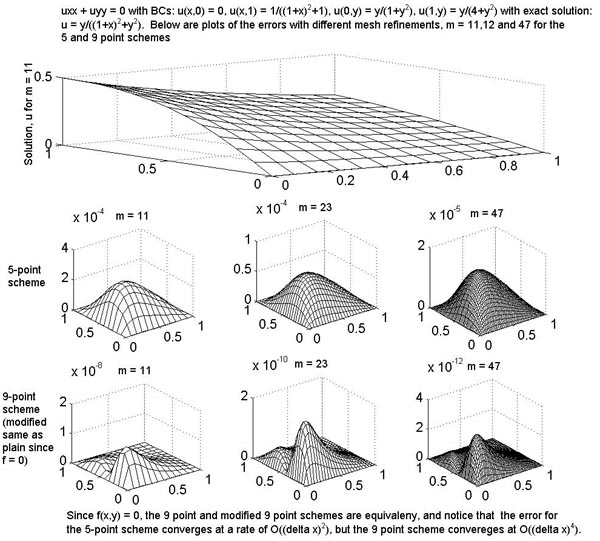
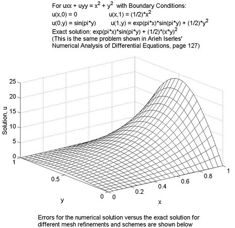
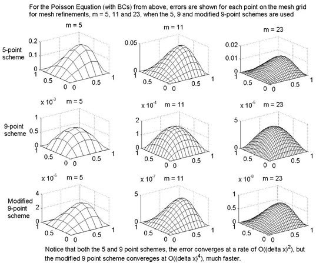
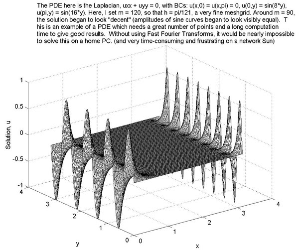
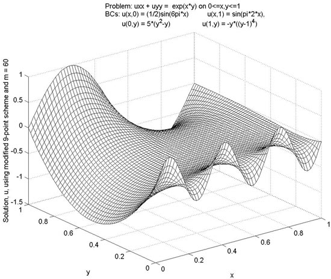

The following is a Fast Solver for the PDE: uxx + uyy = f(x,y) in a square, implemented in Matlab. I followed the outline from Arieh Iserles' Numerical Analysis of Differential Equations (Chapter 12), James Demmel's Applied Numerical Linear Algebra (Chapter 6), and some personal inspiration.
This Poisson Solver is written to use the modified 9-point scheme of order (delta x)^4 instead of the plain 5 and 9 point schemes of order (delta x)^2. However, any of the three schemes can be used. That is, to call this function, type poisson(m,endpt,N) where m = the mesh refinement (best to keep below 150 on a PC. m = 150 on my PC took 7-8 minutes to solve), endpt = the endpt of the the square (i.e., 0endpt), and N = 5,9 or 10. If you want to use the five-point scheme, set N = 5, for the 9-point scheme, set N = 9 and for the Modified 9-point scheme, set N = 10. (If f(x,y) = 0 in uxx + uyy = f(x,y), it is best to set N = 9 since the 9 and modified 9-point schemes are equivalent when f = 0)
To change the function,
f(x,y), edit ffunc.m
To chenge the boundary conditions, edit Form_Boundary.m.
All of the files below must reside in the same directory so that they can be called. Poisson.m lists all necessary files and each file has extensive comments, but the only files that should be edited are ffunc.m and Form_Boundary.m
Again, to call the function, type poisson(m,endpt,N), where m,endpt and N are as described above.
Again, for more information on each file, look at the head of poisson.m. For more description of the process, see Iserles' or Demmel's books. Links to the books and their personal websites are listed below:
Below are several tests and results of using this program:




